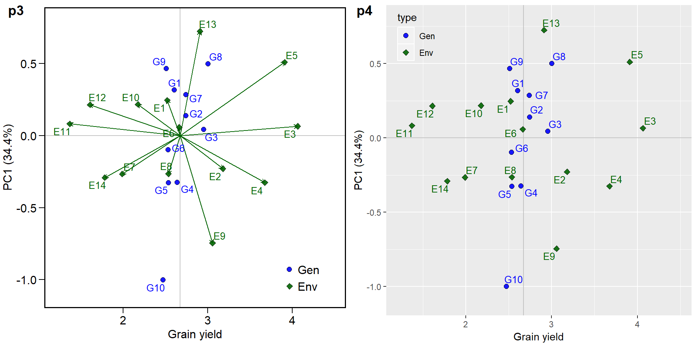
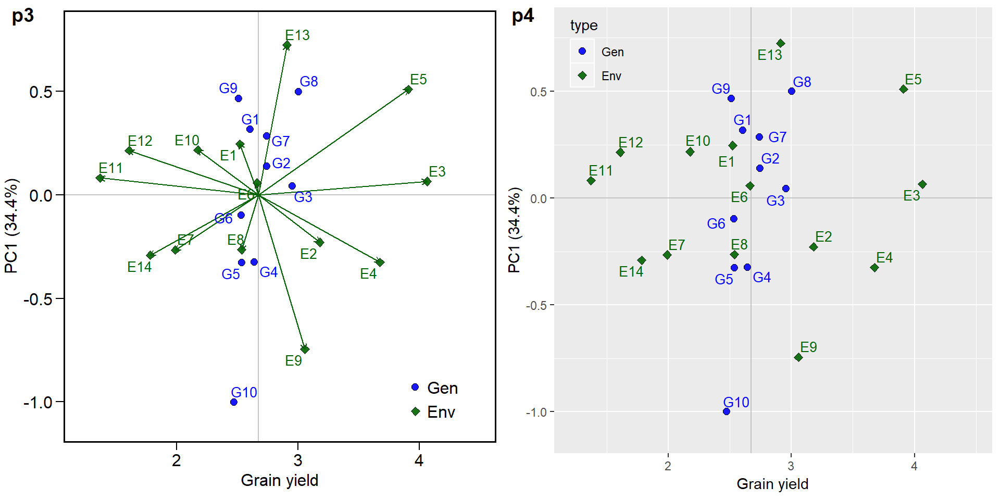
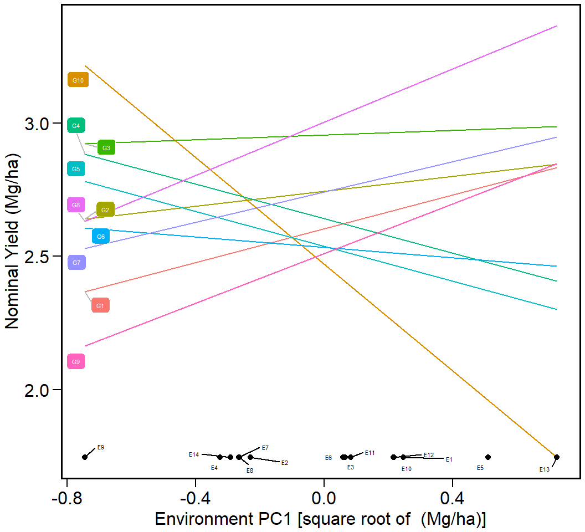

Analyzing multienvironment trials using AMMI
Source:vignettes/vignettes_AMMI.Rmd
vignettes_AMMI.RmdGetting started
In this section, we will use the data in data_ge. For more information, please, see ?data_ge. Other data sets can be used provided that the following columns are in the dataset: environment, genotype, block/replicate and response variable(s).
library(METAAB)
library(ggplot2)
library(cowplot) # used to arrange the graphics
library(kableExtra) # Used to make the tables
library(magrittr) # used for the forward-pipe operator %>%
dataset = data_ge
str(dataset)## Classes 'tbl_df', 'tbl' and 'data.frame': 420 obs. of 5 variables:
## $ ENV: Factor w/ 14 levels "E1","E10","E11",..: 1 1 1 1 1 1 1 1 1 1 ...
## $ GEN: Factor w/ 10 levels "G1","G10","G2",..: 1 1 1 3 3 3 4 4 4 5 ...
## $ REP: Factor w/ 3 levels "1","2","3": 1 2 3 1 2 3 1 2 3 1 ...
## $ GY : num 2.17 2.5 2.43 3.21 2.93 ...
## $ HM : num 44.9 46.9 47.8 45.2 45.3 ...The AMMI model
The estimate of the response for the ith genotype in the jth environment using The Additive Main Effect and Multiplicative interaction (AMMI) model, is given as follows:
\[ {y_{ij}} = \mu + {\alpha_i} + {\tau_j} + \sum\limits_{k = 1}^p {{\lambda _k}{a_{ik}}} {t_{jk}} + {\rho _{ij}} + {\varepsilon _{ij}} \] where \({\lambda_k}\) is the singular value for the k-th interaction principal component axis (IPCA); \(a_{ik}\) is the i-th element of the k-th eigenvector; \(t_{jk}\) is the jth element of the kth eigenvector. A residual \(\rho _{ij}\) remains, if not all p IPCA are used, where \(p \le min(g - 1; e - 1)\).
The AMMI model is fitted with the WAAS.AMMI() function. The first argument is the data, in our example dataset. The second argument (resp) is the response variable to be analyzed. The function allow a single variable (in this case GY) or a vector of response variables. The arguments (gen, env, and rep) are the name of the columns that contais the levels for genotypes, environments, and replications, respectively. The last argument (verbose) control if the code will run silently.
AMMI_model = WAAS.AMMI(.data = dataset,
env = ENV,
gen = GEN,
rep = REP,
resp = GY,
verbose = FALSE)Note that using the arguments in the correct order, the model above may be fitted cleanly using the forward-pipe operator %>%.
Within-environment ANOVA
A within-environment ANOVA considering a fixed-effect model is computed. For each environment the Mean Squares for block, genotypes and error are shown. Estimated F-value and the probability error are also shown for block and genotype effects. Some measures of experimental precision are calculated, namelly, coefficient of variation, \(CV = (\sqrt{MS_{res}}/Mean) \times 100\); the heritability, \(h2 = (MS_{gen} - MS_{res})/MS_{gen}\), and the accuracy of selection, \(As = \sqrt{h2}\).
# printing the WAAS object
options(digits = 3)
data = AMMI_model$GY$individual$individual
kable(data, "html") %>%
kable_styling(bootstrap_options = "striped", "condensed",
full_width = F, position = "left", font_size = 12)| MEAN | MSB | MSG | MSR | FCB | PRFB | FCG | PRFG | CV | h2 | AS | |
|---|---|---|---|---|---|---|---|---|---|---|---|
| E1 | 2.52 | 0.065 | 0.337 | 0.144 | 0.453 | 0.643 | 2.34 | 0.059 | 15.05 | 0.573 | 0.757 |
| E10 | 2.17 | 0.654 | 0.296 | 0.027 | 24.508 | 0.000 | 11.09 | 0.000 | 7.51 | 0.910 | 0.954 |
| E11 | 1.37 | 0.377 | 0.151 | 0.105 | 3.594 | 0.049 | 1.44 | 0.244 | 23.68 | 0.304 | 0.552 |
| E12 | 1.61 | 0.092 | 0.320 | 0.054 | 1.717 | 0.208 | 5.98 | 0.001 | 14.38 | 0.833 | 0.913 |
| E13 | 2.91 | 0.077 | 0.713 | 0.099 | 0.772 | 0.477 | 7.18 | 0.000 | 10.83 | 0.861 | 0.928 |
| E14 | 1.78 | 0.104 | 0.131 | 0.075 | 1.374 | 0.278 | 1.73 | 0.153 | 15.40 | 0.423 | 0.650 |
| E2 | 3.18 | 0.698 | 0.207 | 0.179 | 3.912 | 0.039 | 1.16 | 0.376 | 13.29 | 0.136 | 0.369 |
| E3 | 4.06 | 0.489 | 0.335 | 0.179 | 2.731 | 0.092 | 1.87 | 0.123 | 10.41 | 0.466 | 0.683 |
| E4 | 3.67 | 0.116 | 0.531 | 0.138 | 0.846 | 0.446 | 3.86 | 0.007 | 10.10 | 0.741 | 0.861 |
| E5 | 3.91 | 0.219 | 0.526 | 0.066 | 3.297 | 0.060 | 7.93 | 0.000 | 6.59 | 0.874 | 0.935 |
| E6 | 2.66 | 0.160 | 0.135 | 0.059 | 2.729 | 0.092 | 2.30 | 0.063 | 9.09 | 0.565 | 0.752 |
| E7 | 1.99 | 0.381 | 0.337 | 0.091 | 4.185 | 0.032 | 3.70 | 0.009 | 15.17 | 0.730 | 0.854 |
| E8 | 2.54 | 0.817 | 0.215 | 0.028 | 29.369 | 0.000 | 7.72 | 0.000 | 6.58 | 0.870 | 0.933 |
| E9 | 3.06 | 0.583 | 0.679 | 0.111 | 5.253 | 0.016 | 6.12 | 0.001 | 10.90 | 0.837 | 0.915 |
The AMMI table
data = AMMI_model$GY$anova
kable(data, align = "l", booktabs = T, format = "html", linesep = "") %>%
kable_styling(bootstrap_options = "striped", "condensed",
position = "left", full_width = F, font_size = 12) %>%
row_spec(5:8, bold = T) %>%
add_indent(c(5:13))| Df | Sum Sq | Mean Sq | F value | Pr(>F) | Percent | Accumul | |
|---|---|---|---|---|---|---|---|
| ENV | 13 | 279.574 | 21.506 | 62.33 | 0.000 |
|
|
| REP(ENV) | 28 | 9.662 | 0.345 | 3.57 | 0.000 |
|
|
| GEN | 9 | 12.995 | 1.444 | 14.93 | 0.000 |
|
|
| ENV:GEN | 117 | 31.220 | 0.267 | 2.76 | 0.000 |
|
|
| PC1 | 21 | 10.749 | 0.512 | 5.29 | 0.000 | 34.4 | 34.4 |
| PC2 | 19 | 9.924 | 0.522 | 5.40 | 0.000 | 31.8 | 66.2 |
| PC3 | 17 | 4.039 | 0.238 | 2.46 | 0.001 | 12.9 | 79.2 |
| PC4 | 15 | 3.074 | 0.205 | 2.12 | 0.010 | 9.8 | 89 |
| PC5 | 13 | 1.446 | 0.111 | 1.15 | 0.318 | 4.6 | 93.6 |
| PC6 | 11 | 0.932 | 0.085 | 0.88 | 0.561 | 3 | 96.6 |
| PC7 | 9 | 0.567 | 0.063 | 0.65 | 0.754 | 1.8 | 98.4 |
| PC8 | 7 | 0.362 | 0.052 | 0.54 | 0.804 | 1.2 | 99.6 |
| PC9 | 5 | 0.126 | 0.025 | 0.26 | 0.934 | 0.4 | 100 |
| Residuals | 252 | 24.367 | 0.097 | NA | NA | . | . |
| Total | 419 | 357.816 | 0.854 | NA | NA | . | . |
Nine interaction principal component axis (IPCA) were fitted and four were significant at 5% probability error. Based on this result, the AMMI4 model would be the best model to predict the yielding of the genotypes in the studied environments.
Estimating the response variable based on significant IPCA axes
An interesting feature of METAAB is the implementation of the S3 method predict(). The response variable of a two-way table (for example, the yield of m genotypes in n environments) may be estimated using the function predict(object), where object is an object of class WAAS.AMMI. This estimation is based on the number of multiplicative terms declared in the function. If naxis = 0 is declared, only the main effects (AMMI0) are considered. In this case, the estimated mean will be the estimate from OLS estimation. If naxis = 1, the AMMI1 (with one multiplicative term) is used for estimating the response variable. If naxis = min(g-1; e-1), the AMMIF is fitted. A summary of all possible AMMI models is presented below.
| Member of AMMI family | Espected response of the i-th genotype in the jth environment |
|---|---|
| AMMI0 | \(\hat{y}_{ij} = \bar{y}_{i.} + \bar{y}_{.j} - \bar{y}_{..}\) |
| AMMI1 | \(\hat{y}_{ij} = \bar{y}_{i.} + \bar{y}_{.j} - \bar{y}_{..} +\lambda_1 a_{i1}t_{j1}\) |
| AMMI2 | \(\hat{y}_{ij} = \bar{y}_{i.} + \bar{y}_{.j} - \bar{y}_{..} +\lambda_1 a_{i1}t_{j1}+\lambda_2 a_{i2}t_{j2}\) |
| … | |
| AMMIF | \(\hat{y}_{ij} = \bar{y}_{i.} + \bar{y}_{.j} - \bar{y}_{..} +\lambda_1 a_{i1}t_{j1}+\lambda_2 a_{i2}t_{j2}+...+\lambda_p a_{ip}t_{jp}\) |
Procedures based on postdictive success, such as Gollobs’s test (Gollob 1968) or predictive success, such as cross-validation (Piepho 1994) should be used to define the number of IPCA used for estimating the response variable in AMMI analysis. This package provides both. The WAAS.AMMI() function compute traditional AMMI analysis showing the number of significant axes according to Gollobs’s test. On the other hand, validation.AMMIF() function provides cross-validation of AMMI-model family, considering a completely randomized design (CRD) or a randomized complete block design (RCBD).
predicted = predict(AMMI_model, naxis = 4)
predicted = predicted$GY[1:5,]
kable(predicted, "html") %>%
kable_styling(bootstrap_options = "striped", "condensed", full_width = T)| ENV | GEN | Y | resOLS | Ypred | ResAMMI | YpredAMMI | AMMI0 |
|---|---|---|---|---|---|---|---|
| E1 | G1 | 2.37 | -0.084 | 2.45 | 0.0712 | 2.52 | 2.45 |
| E1 | G10 | 1.97 | -0.344 | 2.32 | -0.3539 | 1.96 | 2.32 |
| E1 | G2 | 2.90 | 0.311 | 2.59 | 0.2904 | 2.88 | 2.59 |
| E1 | G3 | 2.89 | 0.087 | 2.80 | -0.0452 | 2.76 | 2.80 |
| E1 | G4 | 2.59 | 0.100 | 2.49 | 0.0494 | 2.54 | 2.49 |
Only the first five values are shown. The following values are presented: ENV is the environment; GEN is the genotype; Y is the response variable; resOLS is the residual (\(\hat{z}_{ij}\)) estimated by the Ordinary Least Square (OLS), where \(\hat{z}_{ij} = y_{ij} - \bar{y}_{i.} - \bar{y}_{.j} + \bar{y}_{ij}\); Ypred is the predicted value by OLS (\(\hat{y}_{ij} = y_{ij} -\hat{z}_{ij}\)); ResAMMI is the residual estimated by the AMMI model (\(\hat{a}_{ij}\)) considering the number of multiplicative terms informed in the function (in this case 5), where \(\hat{a}_{ij} = \lambda_1\alpha_{i1}\tau_{j1}+...+\lambda_5\alpha_{i5}\tau_{j5}\); YpredAMMI is the predicted value by AMMI model \(\hat{ya}_{ij} = \bar{y}_{i.} + \bar{y}_{.j} - \bar{y}_{ij}+\hat{a}_{ij}\); and AMMI0 is the predicted value when no multiplicative terms are used, i.e., \(\hat{y}_{ij} = \bar{y}_{i.} + \bar{y}_{.j} - \bar{y}_{ij}\).
Estimating the WAAS index
The WAAS.AMMI() function computes the Weighted Average of Absolute Scores considering (i) all principal component axes that were significant (\(p < 0.05\) by default); or (ii) declaring a specific number of axes to be used, according to the following equation:
\[ WAAS_i = \sum_{k = 1}^{p} |IPCA_{ik} \times EP_k|/ \sum_{k = 1}^{p}EP_k \]
where \(WAAS_i\) is the weighted average of absolute scores of the ith genotype; \(PCA_{ik}\) is the score of the ith genotype in the kth IPCA; and \(EP_k\) is the explained variance of the kth IPCA for \(k = 1,2,..,p\), considering p the number of significant PCAs, or a declared number of PCAs. The following functions may be used to do that.
Number of axes based on F-test
In this example only IPCAs with P-value < 0.05 will be considered in the WAAS estimation. This is the default setting and the model was already fitted and stored into AMMI_model>GY>model
data = AMMI_model$GY$model[, c(1:3,13:17, 21:22)]
kable(data, "html") %>%
kable_styling(bootstrap_options = "striped", "condensed",
position = "left", full_width = F, font_size = 12)| type | Code | Y | WAAS | PctResp | PctWAAS | OrResp | OrWAAS | WAASY | OrWAASY |
|---|---|---|---|---|---|---|---|---|---|
| GEN | G1 | 2.60 | 0.126 | 24.88 | 100.0 | 6 | 1 | 62.4 | 3 |
| GEN | G10 | 2.47 | 0.551 | 0.00 | 0.0 | 10 | 10 | 0.0 | 10 |
| GEN | G2 | 2.74 | 0.365 | 51.26 | 43.8 | 3 | 7 | 47.5 | 5 |
| GEN | G3 | 2.96 | 0.131 | 90.93 | 99.0 | 2 | 2 | 95.0 | 1 |
| GEN | G4 | 2.64 | 0.272 | 32.06 | 65.7 | 5 | 4 | 48.9 | 4 |
| GEN | G5 | 2.54 | 0.255 | 12.42 | 69.6 | 7 | 3 | 41.0 | 6 |
| GEN | G6 | 2.53 | 0.275 | 11.80 | 65.0 | 8 | 5 | 38.4 | 8 |
| GEN | G7 | 2.74 | 0.434 | 50.65 | 27.4 | 4 | 9 | 39.0 | 7 |
| GEN | G8 | 3.00 | 0.307 | 100.00 | 57.5 | 1 | 6 | 78.8 | 2 |
| GEN | G9 | 2.51 | 0.401 | 7.32 | 35.4 | 9 | 8 | 21.3 | 9 |
| ENV | E1 | 2.52 | 0.199 | 42.74 | 73.1 | 9 | 5 | 57.9 | 6 |
| ENV | E10 | 2.17 | 0.193 | 29.93 | 74.6 | 10 | 4 | 52.3 | 7 |
| ENV | E11 | 1.37 | 0.151 | 0.00 | 85.3 | 14 | 2 | 42.7 | 11 |
| ENV | E12 | 1.61 | 0.192 | 8.91 | 75.1 | 13 | 3 | 42.0 | 12 |
| ENV | E13 | 2.91 | 0.322 | 57.17 | 42.1 | 6 | 12 | 49.6 | 8 |
| ENV | E14 | 1.78 | 0.205 | 15.34 | 71.7 | 12 | 6 | 43.5 | 10 |
| ENV | E2 | 3.18 | 0.293 | 67.20 | 49.4 | 4 | 8 | 58.3 | 5 |
| ENV | E3 | 4.06 | 0.310 | 100.00 | 45.2 | 1 | 11 | 72.6 | 3 |
| ENV | E4 | 3.67 | 0.345 | 85.57 | 36.4 | 3 | 13 | 61.0 | 4 |
| ENV | E5 | 3.91 | 0.255 | 94.29 | 59.0 | 2 | 7 | 76.6 | 1 |
| ENV | E6 | 2.66 | 0.093 | 48.03 | 100.0 | 7 | 1 | 74.0 | 2 |
| ENV | E7 | 1.99 | 0.300 | 23.02 | 47.6 | 11 | 9 | 35.3 | 13 |
| ENV | E8 | 2.54 | 0.305 | 43.33 | 46.5 | 8 | 10 | 44.9 | 9 |
| ENV | E9 | 3.06 | 0.489 | 62.62 | 0.0 | 5 | 14 | 31.3 | 14 |
In this example, the scores of the nine PCA were not shown. The output generated by the WAAS.AMMI() function shows the following results: type, genotype (GEN) or environment (ENV); Code, the code attributed to each level of the factors; Y, the response variable (in this case the grain yield); WAAS the weighted average of the absolute scores, estimated with all PCA axes with P-value \(\le\) 0.05; PctWAAS and PctResp that are the percentage values for the WAAS and Y, respectively; OrResp and OrWAAS that are the ranks attributed to the genotype and environment regarding the Y or WAAS, respectively; WAASY is the weighted average of absolute scores and response variable. In this case, considering equal weights for PctResp and PctWAAS, the WAASY for G1 is estimated by: \(WAAS_{G1} = [(86.32\times50)+(98.88\times50)]/50+50 = 92.60\). Then the **OrWAASY* is the rank for the WAASY value. The genotype (or environment) with the largest WAASY value has the first ranked.
Number of axes declared manually
The second option to compute the WAAS is by manually declaring a specific number of multiplicative terms. In this case, the number of terms declared is used independently of its significance. Let us, for the moment, assume that after a cross-validation procedure the AMMI7 was the most predictively accurate AMMI model and the researcher will use this model. The additional argument naxis in the function WAAS.AMMI is then used to overwrite the default chose of significant terms.
AMMI_model_2 = dataset %>% WAAS.AMMI(ENV, GEN, REP, GY,
naxis = 7, # Use 7 IPCA for computing WAAS
verbose = FALSE)The only difference in this output is that here we declared that seven IPCA axes should be used for computing the WAAS value. Thus, only the values of WAAS, OrWAAS, WAASY and OrWAASY may have significant changes.
Biplots
Provided that an object of class “WAAS.AMMI” is available in the global environment, the graphics may be obtained using the function plot.scores(). To do that, we will revisit the previusly fitted model AMMI_model . Please, refer to ?plot.scores for more details. Four types of graphics can be generated: 1 = \(PC1 \times PC2\); 2 = \(GY \times PC1\); 3 = \(GY \times WAASB\); and 4 = a graphic with nominal yield as a function of the environment PCA1 scores.
biplot type 1: PC1 x PC2
library(cowplot)
p1 = plot.scores(AMMI_model$GY, type = 1)
p2 = plot.scores(AMMI_model$GY,
type = 1,
polygon = TRUE,
col.gen = "black",
col.env = "gray70",
col.segm.env = "gray70",
axis.expand = 1.5)
plot_grid(p1, p2, labels = c("p1","p2"))
biplot type 2: GY x PC1
p3 = plot.scores(AMMI_model$GY, type = 2)
p4 = plot.scores(AMMI_model$GY, type = 2,
col.segm.env = "transparent") +
theme_gray() +
theme(legend.position = c(0.1, 0.9),
legend.background = element_rect(fill = NA))
plot_grid(p3, p4, labels = c("p3","p4"))
biplot type 3: GY x WAAS
The quadrants in the following biplot represent four classes of genotypes/environments regarding the joint interpretation of mean performance and stability. The genotypes or environments included in quadrant I can be considered unstable genotypes or environments with high discrimination ability, and with productivity below the grand mean. In quadrant II are included unstable genotypes, although with productivity above the grand mean. The environments included in this quadrant deserve special attention since, in addition to providing high magnitudes of the response variable, they present a good discrimination ability. Genotypes within quadrant III have low productivity, but can be considered stable due to the lower values of WAASB. The lower this value, the more stable the genotype can be considered. The environments included in this quadrant can be considered as poorly productive and with low discrimination ability. The genotypes within the quadrant IV are higly productive and broadly adapted due to the high magnitude of the response variable and high stability performance (lower values of WAASB).
p5 = plot.scores(AMMI_model$GY, type = 3)
p6 = plot.scores(AMMI_model$GY, type = 3,
x.lab = "My customized x label",
size.shape = 3,
size.tex.pa = 2,
x.lim = c(1.2, 4.7),
x.breaks = seq(1.5, 4.5, by = 0.5)) +
theme(legend.position = c(0.1, 0.9))
plot_grid(p5, p6, labels = c("p5","p6"))
Simultaneous selection for mean performance and stability
The WAASY index is used for genotype ranking considering both the stability (WAAS) and mean performance based on the following model:
\[ WAASY{_i} = \frac{{\left( {r{G_i} \times {\theta _Y}} \right) + \left( {r{W_i} \times {\theta _S}} \right)}}{{{\theta _Y} + {\theta _S}}} \]
where \(WAASY_i\) is the superiority index for the i-th genotype that weights between performance and stability; \(rG_i\) and \(rW_i\) are the rescaled values (0-100) for GY and WAASB, respectively; \(\theta _Y\) and \(\theta_S\) are the weights for GY and WAASB, respectively.
This index was also already computed and stored into AMMI_model>GY>model. An intuitively plot may be obtained by running
library(ggplot2)
p1 = plot.WAASBY(AMMI_model$GY)
p2 = plot.WAASBY(AMMI_model$GY, col.shape = c("gray20", "gray80"))
plot_grid(p1, p2, labels = c("p1", "p2"))
The values of WAASY in the plot above were computed considering equal weights for mean performance and stability. Different weights may be assigned using the wresp argument of the WAAS.AMMI() function.
Estimating the WAASY in different scenarios
In the following example, we will assume that we want to obtain the ranks considering different scenarios (different weights). Supposing that the WAAS/GY weight ratio is changed by 10% each scenario the following function is used.
Printing the model outputs
The genotype ranking for each scenario of WAASY/GY weight ratio is shown bellow
options(digits = 4)
data = WAASratio$hetcomb
kable(data, "html") %>%
kable_styling(bootstrap_options = "striped", "condensed",
position = "left", full_width = F, font_size = 12)| 100/0 | 90/10 | 80/20 | 70/30 | 60/40 | 50/50 | 40/60 | 30/70 | 20/80 | 10/90 | 0/100 | |
|---|---|---|---|---|---|---|---|---|---|---|---|
| G1 | 1 | 2 | 2 | 2 | 3 | 3 | 3 | 4 | 5 | 6 | 6 |
| G10 | 10 | 10 | 10 | 10 | 10 | 10 | 10 | 10 | 10 | 10 | 10 |
| G2 | 7 | 7 | 7 | 7 | 5 | 5 | 4 | 3 | 3 | 3 | 3 |
| G3 | 2 | 1 | 1 | 1 | 1 | 1 | 1 | 1 | 1 | 2 | 2 |
| G4 | 4 | 4 | 4 | 4 | 4 | 4 | 5 | 6 | 6 | 5 | 5 |
| G5 | 3 | 3 | 5 | 5 | 6 | 6 | 7 | 7 | 7 | 7 | 7 |
| G6 | 5 | 6 | 6 | 6 | 7 | 8 | 8 | 8 | 8 | 8 | 8 |
| G7 | 9 | 9 | 8 | 8 | 8 | 7 | 6 | 5 | 4 | 4 | 4 |
| G8 | 6 | 5 | 3 | 3 | 2 | 2 | 2 | 2 | 2 | 1 | 1 |
| G9 | 8 | 8 | 9 | 9 | 9 | 9 | 9 | 9 | 9 | 9 | 9 |
In addition, the genotype ranking depending on the number of multiplicative terms used to estimate the WAAS index is also computed.
options(digits = 4)
data = WAASratio$hetdata
kable(data, "html") %>%
kable_styling(bootstrap_options = "striped", "condensed",
position = "left", full_width = F, font_size = 12)| WAAS | 9PC | 8PC | 7PC | 6PC | 5PC | 4PC | 3PC | 2PC | 1PC | |
|---|---|---|---|---|---|---|---|---|---|---|
| G1 | 1 | 2 | 2 | 2 | 2 | 2 | 1 | 2 | 4 | 5 |
| G10 | 10 | 10 | 10 | 10 | 10 | 10 | 10 | 10 | 10 | 10 |
| G2 | 7 | 6 | 6 | 6 | 7 | 7 | 7 | 6 | 3 | 3 |
| G3 | 2 | 1 | 1 | 1 | 1 | 1 | 2 | 1 | 1 | 1 |
| G4 | 4 | 5 | 5 | 4 | 5 | 4 | 4 | 5 | 7 | 6 |
| G5 | 3 | 4 | 4 | 5 | 4 | 5 | 3 | 3 | 5 | 7 |
| G6 | 5 | 3 | 3 | 3 | 3 | 3 | 5 | 4 | 2 | 2 |
| G7 | 9 | 8 | 8 | 8 | 8 | 9 | 9 | 8 | 8 | 4 |
| G8 | 6 | 7 | 7 | 7 | 6 | 6 | 6 | 7 | 6 | 9 |
| G9 | 8 | 9 | 9 | 9 | 9 | 8 | 8 | 9 | 9 | 8 |
Plotting the heat map graphics
The first type of heatmap shows the genotype ranking depending on the number of principal component axes used for estimating the WAASB index. An euclidean distance-based dendrogram is used for grouping the genotype ranking for both genotypes and principal component axes. The second type of heatmap shows the genotype ranking depending on the WAASB/GY ratio. The ranks obtained with a ratio of 100/0 considers exclusively the stability for genotype ranking. On the other hand, a ratio of 0/100 considers exclusively the productivity for genotype ranking.

Other AMMI-based stability indexes
The following AMMI-based stability indexes may be computed using the function AMMI_indexes():
- AMMI stability value, ASV, (Purchase, Hatting, and Deventer 2000).
\[ ASV = \sqrt {{{\left[ {\frac{{IPCA{1_{ss}}}}{{IPCA{2_{ss}}}} \times \left( {IPCA{1_{score}}} \right)} \right]}^2} + {{\left( {IPCA{2_{score}}} \right)}^2}} \]
- Sums of the absolute value of the IPCA scores
\[ SIP{C_i} = \sum\nolimits_{k = 1}^P {\left| {\mathop {\lambda }\nolimits_k^{0.5} {a_{ik}}} \right|} \]
- Averages of the squared eigenvector values
\[ E{V_i} = \sum\nolimits_{k = 1}^P {\mathop a\nolimits_{ik}^2 } /P \] described by Sneller, Kilgore-Norquest, and Dombek (1997), where P is the number of IPCA retained via F-tests;
- absolute value of the relative contribution of IPCAs to the interaction (Zali et al. 2012).
\[ Z{a_i} = \sum\nolimits_{k = 1}^P {{\theta _k}{a_{ik}}} \]
where \({\theta _k}\) is the percentage sum of squares explained by the k-th IPCA. Simultaneous selection indexes (ssi), are computed by summation of the ranks of the ASV, SIPC, EV and Za indexes and the ranks of the mean yields (Farshadfar 2008), which results in ssiASV, ssiSIPC, ssiEV, and ssiZa, respectively.
The AMMI_index() function has two arguments. The first (x) is the model, which must be an object of the class WAAS.AMMI. The second, (order.y) is the order for ranking the response variable. By default, it is set to NULL, which means that the response variable is ordered in descending order. If x is a list with more than one variable, order.y must be a vector of the same length of x. Each element of the vector must be one of the “h” or “l”. If “h” is used, the response variable will be ordered from maximum to minimum. If “l” is used then the response variable will be ordered from minimum to maximum. Using the forward-pipe operator %>% it is possible to structure sequences of data operations left-to-right. The operators pipe their left-hand side values forward into expressions that appear on the right-hand side. When coupling several function calls with the pipe-operator, the benefit will become more apparent. Let’s construct this model.
stab_indexes = dataset %>%
WAAS.AMMI(ENV, GEN, REP, GY, verbose = FALSE) %>%
AMMI_indexes()
kable(stab_indexes, "html") %>%
kable_styling(bootstrap_options = "striped", "condensed",
position = "left", full_width = F, font_size = 12)
|
References
Farshadfar, E. 2008. “Incorporation of AMMI stability value and grain yield in a single non-parametric index (GSI) in bread wheat.” Pakistan Journal of Biological Sciences 11 (14): 1791–6. http://www.ncbi.nlm.nih.gov/pubmed/18817218.
Gollob, H. F. 1968. “A statistical model which combines features of factor analytic and analysis of variance techniques.” Psychometrika 33 (1): 73–115. https://doi.org/10.1007/BF02289676.
Piepho, H.P. 1994. “Best Linear Unbiased Prediction (Blup) for Regional Yield Trials: A Comparison to Additive Main Effects and Multiplicative Interaction (Ammi) Analysis.” Theor. Appl. Genet. 89 (5): 647–54. https://doi.org/10.1007/BF00222462.
Purchase, J. L., Hesta Hatting, and C. S. van Deventer. 2000. “Genotype × environment interaction of winter wheat ( Triticum aestivum L.) in South Africa: II. Stability analysis of yield performance.” South African Journal of Plant and Soil 17 (3): 101–7. https://doi.org/10.1080/02571862.2000.10634878.
Sneller, C. H., L. Kilgore-Norquest, and D. Dombek. 1997. “Repeatability of Yield Stability Statistics in Soybean.” Crop Science 37 (2): 383–90. https://doi.org/10.2135/cropsci1997.0011183X003700020013x.
Zali, H., E. Farshadfar, S.H. Sabaghpour, and R. Karimizadeh. 2012. “Evaluation of genotype × environment interaction in chickpea using measures of stability from AMMI model.” Annals of Biological Research 3 (7): 3126–36. http://eprints.icrisat.ac.in/7173/.